TPR's Mega Europe Trip
Rome Rome Credit Whoring Rainbow Magicland Fiabilandia Mirabilandia
Movieland Studios Gardaland Walygator Parc Holiday Park Europa Park
Fort Fun Heide Park Schlossbeck Movie Park Germany
Phantasialand
Parc Asterix
Disneyland Paris
 Sadly, the time has come. We're on the last official park of the TPR Mega Europe Trip. But hey, we're gonna have a blast at Parc Asterix.
Sadly, the time has come. We're on the last official park of the TPR Mega Europe Trip. But hey, we're gonna have a blast at Parc Asterix.
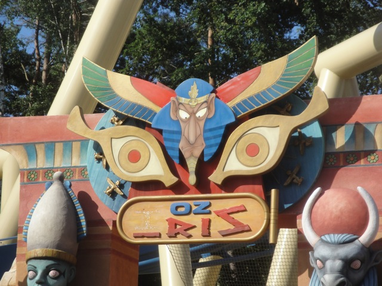
All right. Lets get the party started with some nice Morning ERT on Oziris.
Am I at Busch Gardens Tampa? No seriously. This rides theming is nearly IDENTICAL to Montus!!!!!
And yeah. This has one of the best themed lines I've ever been in. It seriously reminds me of Dueling Dragons with all the cool stuff to see and the fact that it goes on forever.
Enjoy this view of an empty station at Parc Asterix. You'll never ever see this again.
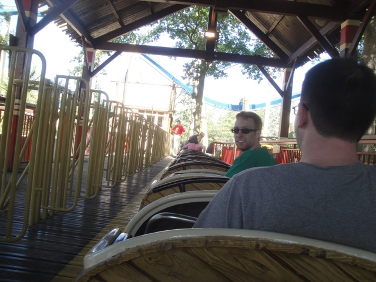
All right. ERT is over and the park is open and it is PACKED today (And I mean PACKED)!!!!! So in a mad dash to get all the credits not on the Flash Pass, we start off with SOS Numerobis. The Tivoli.
Quick. Before it gets a line!!! Lets do Transdemonium!!! The dark ride everyone praises but isn't on the Flashpass!!!
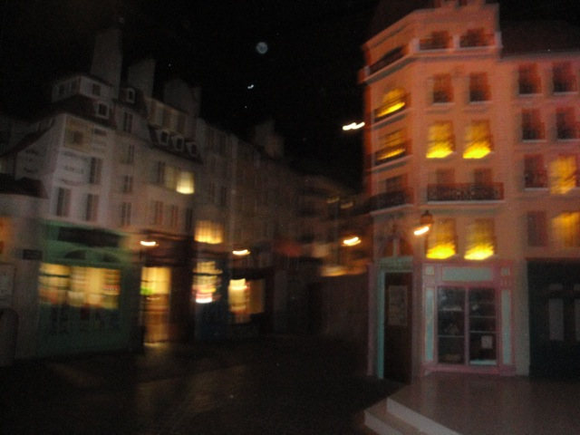
It was a fun dark ride and all, but nothing to crazy over.
Holy Crap!!!! Look at that line already!!!! Its already grown to 30 minutes!!!
 Hey, its not a bad ride. Kind of reminds me of what Jaguar would be like if it had bobsled seating.
Hey, its not a bad ride. Kind of reminds me of what Jaguar would be like if it had bobsled seating.
 Its a fun ride, but definetly not worth a 30 minute wait.
Its a fun ride, but definetly not worth a 30 minute wait.
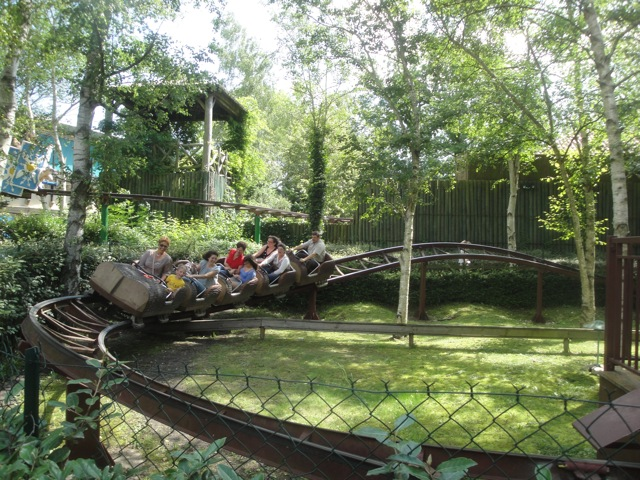
Yes, we rode this pathetically small kiddy coaster. But whats even more pathetic than us riding this...
Is how long we waited for this credit!!!! HOLY CRAP!!! I turn away from rides like Goliath and Tatsu when they have lines like this. And if this is for the parks (kiddy) kiddy coaster, I'm terrified of the rest of the park.
Glad I did Transdemonium early in the morning before all the crowds attacked it.
Thats got to be at least a 45 minute wait for the pirate ship. Somebody help me. =0
 Well, luckily I got all the non-Fastpass credits. And thank god this thing has fastpass because this horrible ride had a 3 HOUR WAIT!!!!
Well, luckily I got all the non-Fastpass credits. And thank god this thing has fastpass because this horrible ride had a 3 HOUR WAIT!!!!
After Robb filmed his lipstick mounted POV for TPR, he gave me some of his duct tape so I could take a POV of the ride. And yeah. It's a really clean G-Rated POV that shows just how wonderful this ride is. =)
 Though seriously, this has got to be the worst coaster I've ever ridden. Yes, even worse than Dragon.
Though seriously, this has got to be the worst coaster I've ever ridden. Yes, even worse than Dragon.
 I mean look at it!!! Do those elements even look natural!!!?
I mean look at it!!! Do those elements even look natural!!!?
 Don't be fooled by its pretty looks. It'll try to murder you. And not just your head, it'll try to break your arms as well.
Don't be fooled by its pretty looks. It'll try to murder you. And not just your head, it'll try to break your arms as well.
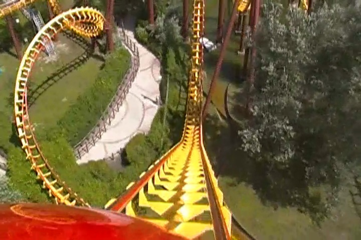
Gee, I had no idea the French were also creating weapons of mass destructions. Guess they're trying to create some good weapons so they don't have to immedietly surrender all the time. =)
 Seeing a three hour line for this monstrosity really makes me question the intellegence of the French.
Seeing a three hour line for this monstrosity really makes me question the intellegence of the French.
 All right. Thats enough sado-masachist talk for now. I wanna ride something good.
All right. Thats enough sado-masachist talk for now. I wanna ride something good.
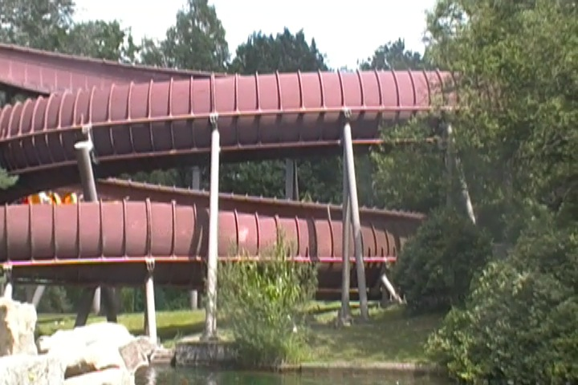
Ooh!!! Bobsled!!! And its themed to cavemen!!! This has got to be good!!!
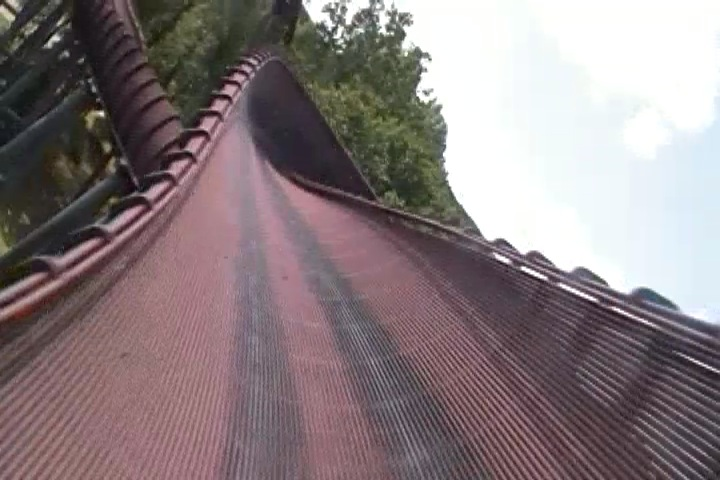
By far, the best of the three Mack Bobsleds I rode on this trip. Why can't Mack build more of these!!? They're really fun rides!!!
Quick!!! Grab the hat!!!!!
Time for lunch at the Fruit Hat Resteraunt.
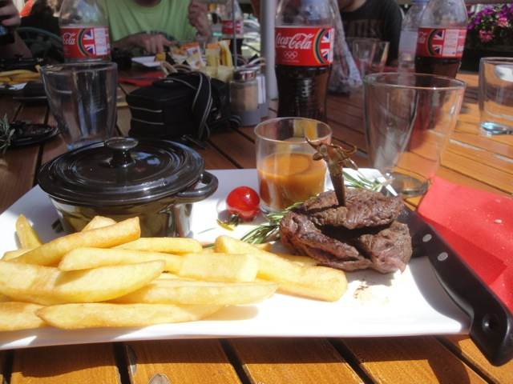
Yes, it was a full service sit down resteraunt, and we ate here for 2 reasons. 1, it was included in our meal voucher, which is awesome. And 2, its OK to have a 2 hour lunch when everything in the park has a 2 hour line to kill time.
Hey, it was really good. We even ordered dessert. =)
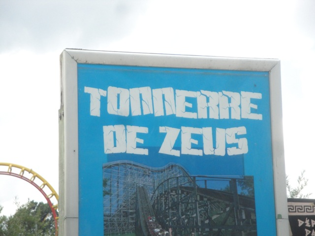
All thats left for us to ride is Tonnerre De Zeus, the parks wooden coaster.
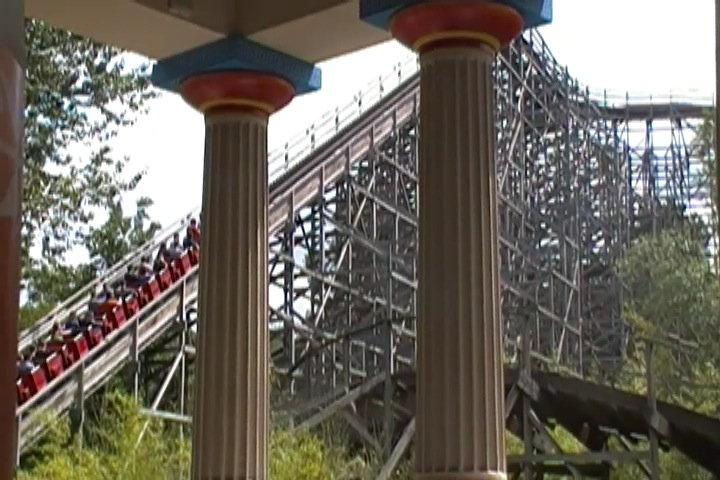
I've heard a lot of good things about this ride and how its one of the best coasters in Europe, so I was really looking foreword to this ride.
Well first off, a complaint I have is that the operators have no clue about the Fast Pass. We show it to them, they aren't sure if its legit, they talk to their supervisor, then they keep trying to put us on, but always forget to let us on, then when they do, the guests get angry. Well, at least it was...No. It wasn't. It just sucked.
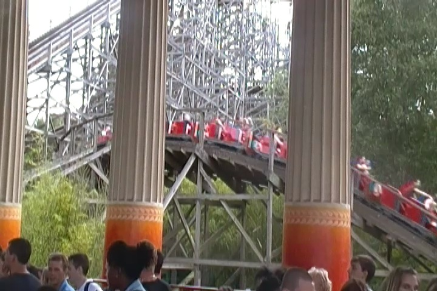
So was it as good as I heard?
 Sadly, no it wasn't. I mean, it was a very fun ride. Comparable to say, Ghostrider or Excalibur, but those aren't Top 10 Rides. And like Ghostrider, you can really tell that it used to be much more insane, which is a bummer. But hey, its still a really good wooden coaster.
Sadly, no it wasn't. I mean, it was a very fun ride. Comparable to say, Ghostrider or Excalibur, but those aren't Top 10 Rides. And like Ghostrider, you can really tell that it used to be much more insane, which is a bummer. But hey, its still a really good wooden coaster.
"GRR!!!! I'M THE ALL MIGHTY AND POWERFUL ZEUS!!! FEAR ME!!!! WORSHIP ME!!!!!!"
I don't fear anyone who wears those panties. =)
 Hey. Lets take another ride on OzIris. Why? Because we can get on immedietly, and anything not on fastpass isn't worth the bat-sh*t crazy wait.
Hey. Lets take another ride on OzIris. Why? Because we can get on immedietly, and anything not on fastpass isn't worth the bat-sh*t crazy wait.
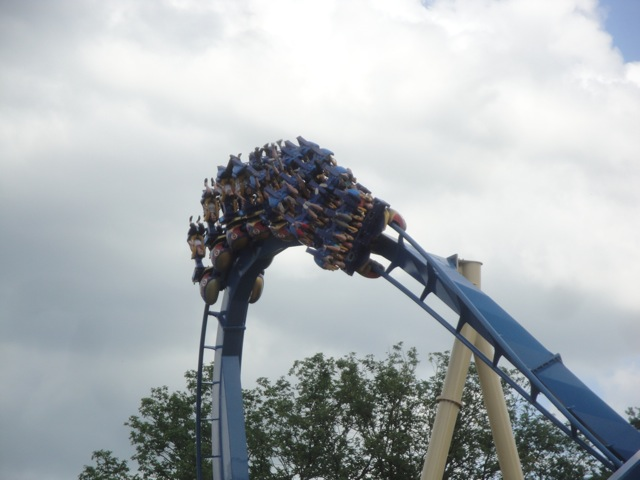
I'm not sure who it was that said OzIris is a return to the old school B&M Days, but they were flat out wrong.
 It's pretty much just Silver Bullet with Montu's theming. Its got those same flowy inversions, smoothness, and even the same overbank.
It's pretty much just Silver Bullet with Montu's theming. Its got those same flowy inversions, smoothness, and even the same overbank.
 But hey. Its a really fun ride and a great fit for Parc Asterix. And it has a much better first drop than Silver Bullet.
But hey. Its a really fun ride and a great fit for Parc Asterix. And it has a much better first drop than Silver Bullet.
Anyone else wanna ride in that guys ass?
We all did Le Defi Ceaser as a group as its the best Mad House ever.
 First they put you in Ceaser's Army.
First they put you in Ceaser's Army.
 Then you all march off to fight for Ceaser. Its by far my favorite Mad House.
Then you all march off to fight for Ceaser. Its by far my favorite Mad House.
"Umm, Can't you see I'm peeing here. How about some damn privacy!!!?"
We decieded to leave Parc Asterix early since we rode all the flashpass rides as much as we wanted and nothing else had a waitable wait. So we just leave and have fun hanging out in the French Village of Roissy En France, in the outskirts of Paris right by Charles De (Terrible) Gaulle (Worst Ever) Airport.
All right. Lets start out by having Japanese Food in France for dinner at Delicous. (Oishi is Japanese for delicous. I'm slowly learning Japanese, or at least I will if I don't stop due to being too busy).
Notice anything about these Chopsticks?
I must say. It was a great meal. =)
Hey, we decied to just wander around the town and found some really fun things.
That church gives the town a really nice look. I like it.
No No No. Don't worry about it. That's perfectly normal. All the signs here are dented like that.
A: Is it me or does anyone else see an Evil Mickey in the trees? and B: Is it ironic that I found this the day before I go to Disneyland Paris?
"HOLY SH*T!!!! I FOUND A RANDOM SPINNER!!!!! THESE THINGS ARE AMAZING!!!!! WHY DID YOU HAVE TO TAKE YOURS OUT ARROYO VERDE!!!!?"
Hey, I love finding random playground equipment in the town. =)
Disneyland Paris
Home